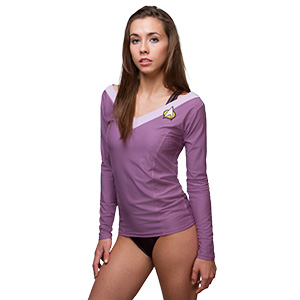
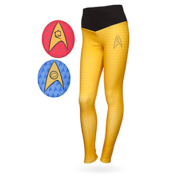
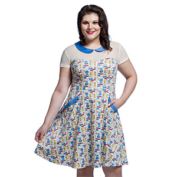

- HOME
-

Star Trek Clothing
I love to share my Star Trek fandom with clothes, be it on the couch in sleepwear, at the beach, or at a convention. Cosplaying, or just introducing a little flare into your daily routine is fun and helps you find friends who share your interests. Show me the latinum and take home some of these beauties yourself!
 If you are fair skinned like Deanna Troy this swim shirt is perfect for you. Cute, purple, and unmistakenly modeled after her, you will definitely make a statement with this piece.
The shirt breathes nicely and dries quickly. Beat the cliche, and be nerdy and sport in this eye catching pair of leggings. Make your affilation known with red, blue, and option colors available.
Stop traffic and you'll go unmaimed by it. Take'n it back to the old school when Star Trek was so cool..okay but no really it still is cool and this retro styled dress is sure to please. It is covered in Enterprises and it has real live pockets. Gender clothing equality included.
This dress is both functional and spunky!Price: $49.99 Price: $29.99 Price: $39.99 
For the shy among us, I give you the Star Trek sleep shirt. Cottony soft and casual, this shirt screams for a good Star Trek marathon.
Grab a Klingon Blood Ale and settle in.
We might not have a whole planet dedicated to vacationing like Risa, but this themed swimsuit will have you enjoying yours like a Starfleet officer on leave.

Rock the Star Trek original series look with these lightly pleated skirts sported by the likes of Uhara.
Mini, but not too mini - you'll give homage to the original and set yourself apart from the crowd.Price: $29.99 Price: $59.99 Price: $69.99